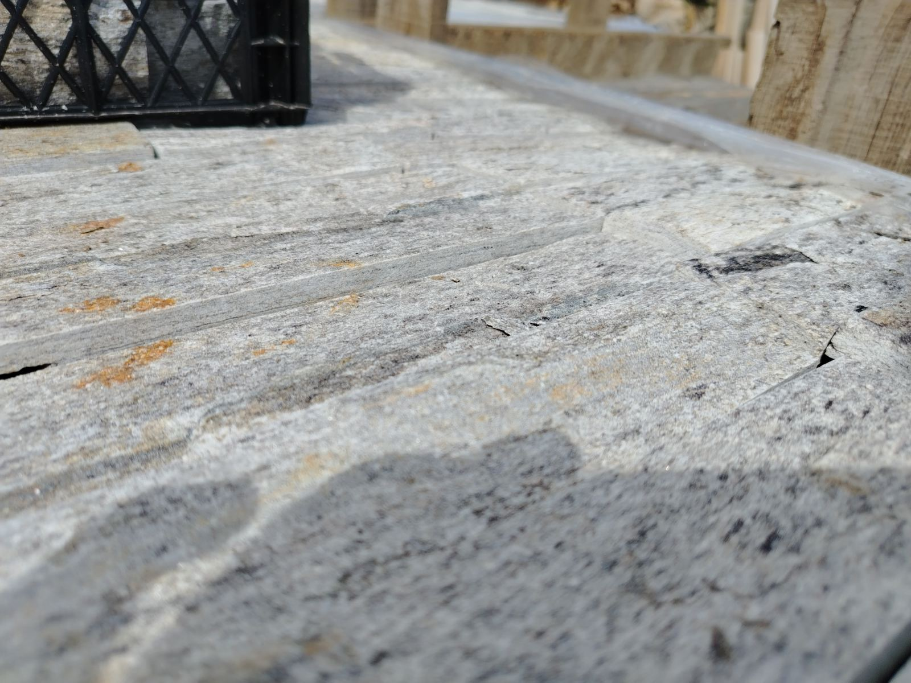
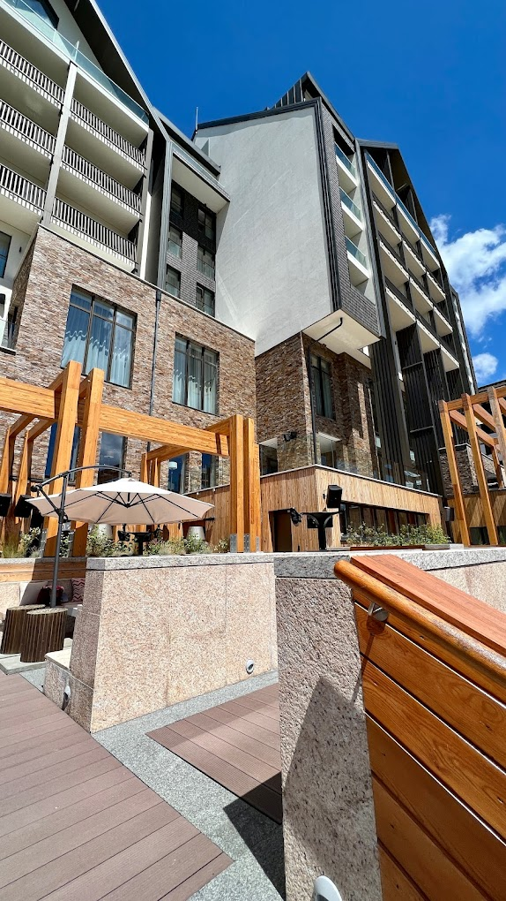
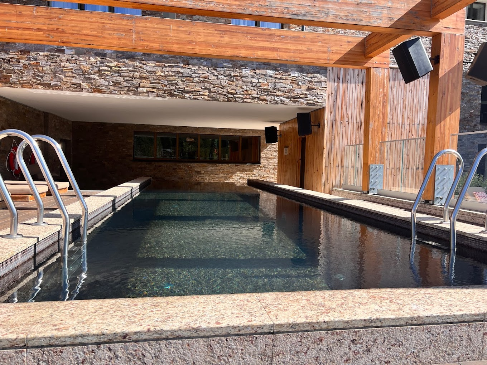

Bakarna Studenica
Topao ton, odličan za zidove i detalje u enterijeru i eksterijeru.
Sečenje i obrada po meri. Brza isporuka i ugradnja po dogovoru.
Premium projekat • Referenca
Naš dekorativni prirodni kamen korišćen je u projektima visokih standarda – od enterijera do fasada. Radimo sečenje i obradu po meri. Cena je na upit.


Kamen kao premium završna obloga u realnom prostoru.
Neolit Stone se bavi proizvodnjom i prodajom prirodnog dekorativnog studeničkog kamena. Fokus nam je na preciznoj obradi, pouzdanoj isporuci i rešenjima koja izgledaju luksuzno u stvarnom prostoru.
Radimo sečenje i obradu po meri, uz pažljivo biranje strukture i tona kamena za svaki projekat. Bilo da je zid, fasada, dvorište ili enterijer – cilj je isti: uredan završni izgled i dug vek trajanja.


Prirodni dekorativni kamen za zid, fasadu, dvorište i enterijer. Sečenje i obrada po meri. Cena je na upit.
Topao ton, odličan za zidove i detalje u enterijeru i eksterijeru.

Čist i moderan izgled za enterijer, stepeništa i dekorativne površine.

Prirodna tekstura, idealna za dekorativne zidove i rustične ambijente.

Precizne dimenzije, čist spoj i premium završnica za fasade i enterijer.

Stubovi, lajsne i detalji po meri — za projekte koji traže završni „premium“ utisak.

Prirodno uklapanje u dvorišta i terene, stabilno i dekorativno rešenje.
Pošaljite upit — dobijate preporuku rešenja i cenu na upit prema vrsti kamena i količini.
Realne fotografije sa terena • Naši projekti





Za hotele, građevinske firme, arhitekte i velike projekte pripremamo ponudu po meri. Cena je na upit i zavisi od vrste kamena, obrade i količine.
Popusti i logistika za veće narudžbine, uz jasno definisane rokove.
Rezervisani termini i brža realizacija za investitorske projekte.
Dimenzije i završna obrada prilagođeni projektu (enterijer/eksterijer).
Preporuka vrste kamena, količina i detalja ugradnje, uz posvećenu komunikaciju.
Za profesionalce: arhitekte, dizajnere i izvođače radova — posaljite nacrte i fotografije, mi Vam vraćamo predlog rešenja i cenu.
Odgovori na najčešća pitanja o dekorativnom kamenu, studeničkom kamenu, isporuci i izradi po meri.
Najbolji izbor zavisi od prostora i željenog izgleda. Za moderan izgled često se biraju sečene ploče, dok lomljeni kamen daje prirodniju teksturu. Pošaljite fotografiju zida i okvirnu kvadraturu — predložićemo rešenje.
Da. Prirodni studenički kamen je čest izbor za fasade zbog postojanosti i izgleda. Preporuka zavisi od podloge, izloženosti vremenskim uslovima i tipa završne obrade.
Održavanje je jednostavno: periodično pranje vodom i po potrebi blagim sredstvom. Kod jačeg zaprljanja može se koristiti pranje pod pritiskom (uz pažnju prema fugama i površini).
Da. Radimo sečenje i obradu prema dimenzijama i potrebama projekta (rez, format, završna obrada). Najbrže je da pošaljete skicu ili fotografije i napišete šta želite da postignete.
Isporuka je prema dogovoru i zavisi od lokacije i količine. Ugradnju obično rade majstori izvođača za vece kolicine, dok za menje kvadrature tu uslugu nudimo i mi.
Rok zavisi od vrste kamena, obrade i količine. Nakon upita i osnovnih informacija, dobićete okviran rok izrade i isporuke.
Da. Za investitorske projekte nudimo posebne uslove, prioritetnu izradu i ponudu prilagođenu projektu. Kontaktirajte nas sa specifikacijom i rokovima.
Cena je na upit i zavisi od vrste kamena, završne obrade i količine. Pošaljite fotografije prostora, okvirnu kvadraturu i željeni stil — dobićete predlog i ponudu.
Pošaljite upit i dobićete predlog rešenja i cenu na upit (u zavisnosti od vrste kamena i količine).
Studenica i okolina • Isporuka prema dogovoru